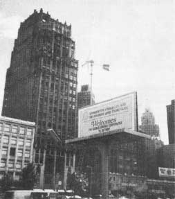

Well, the big World Energy Conference held in Detroit September 23-27 has come and gone . . . and, as predicted (see Energy Flashes, MOTHER NO. 29), it was a political boondoggle. The real action in the field for the month of Sep t ember and the city of Detroit took place a few days before (on the 20th and 21st) when the first genuine meeting of the American Wind Energy Association was held in the basement of one of the Motor City's police stations.
Marcellus Jacobs was there. . . and Henry Clews and Big Bill Delp and Solomon Kagin and Great Lakes Windpower and Dyna Technology and Roha Tower and North Wind and Sun Structures and 21st Century Living and Geoffrey Gerhard and Wind Works and Soleq and Windlight Alaska and Creative Electronics and a whole bunch of other folks and companies who already are-or soon will be-well known for their efforts in harnessing moving masses of air.
Al O'Shea (whose merry-and dang capable-crew at Environmental Energies, Inc. put the affair together) was elected president of the new organization and Real Gas and Electric Company's Solomon Kagin is AWEA's first vice president. Susan Lee Gerhard (West Wind) was named secretary and the treasurer of the wind power group is Nancy Horning of Environmental Energies, Inc. Bill Delp, Al O'Shea, Chuck Pipher and Charles Leverich make up the American Wind Energy Association's board of directors.
Is the new organization dynamic? Well . . . when the WEC goldbricks arrived in Detroit to talk about energy . . . they were greeted by a working, wind-powered, lighted billboard erected by AWEAer Al O'Shea and the Environmental Energies, Inc. gang. I'd say that was dynamic, wouldn't you?
If you'd like an information packet about the AWEA, write to Al O'Shea, American Wind Energy Association, 21243 Grand River, Detroit, Michigan 48219. Stick a dollar in with your letter (the AWEA is still a shoestring operation) and tell Al that MOTHER sent you.
|
 |
|
|